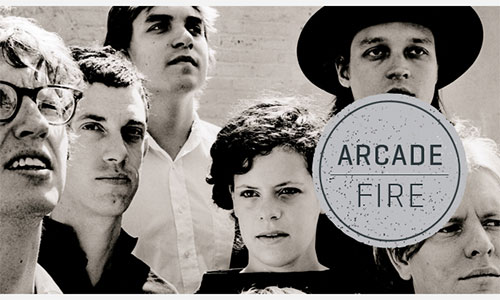

News
+ Beyonce Releases Surprise "Visual Album" |
|---|

Top Picks
|
|---|

Albums of 2013
|
|---|

Arcade Fire - Reflektor

Its likely that the first time you heard the Arcade Fire's monstrously anticipated fourth album Reflektor, you were—to borrow a phrase that Win Butler spits out like a bite of bad food during the record's disco-noir title track—"staring at a screen." This past Thursday, the band posted to Youtube an 85-minute video which cued up the entirety of the double-album to visuals from Marcel Camus' kaleidoscopic 1959 film Black Orpheus. If something that happens on the internet can be considered An Event, then this certainly was one; in the same moment I saw the band's official tweet announcing it, two people simultaneously instant-messaged me the link. It was late afternoon on the East Coast, lunchtime on the West, and in that moment I did exactly what thousands of other people in those and all other time zones did: Stopped what I was doing, closed some extraneous tabs and programs, and listened. The auto-updating comments became a chronicle of knee-jerk first impressions: fervent gushing ("The bassline on 'Joan of Arc' is fucking epic"), groan-worthy puns ("I can't even reflect how excited this makes me!"), and egregious misspellings ("I don't understand what all the fuzz is about"). This scene would have seemed bizarre—and likely a little sad— to us decades ago, and it's frightening to imagine how quaint it will seem in the future. But this is how a lot of people at this moment in time—the one in which Reflektor was made, and the one it distrustfully interrogates—discover new music: Alone; together.
All four of the Montreal-based band's albums have been about the tension between those two words, taking up subjects like suburban isolation and the false community of religiosity, but Reflektor is larger, at least in scope, than anything Arcade Fire have done before. Of course, the stakes have been raised considerably since we've last heard from them: Their previous album, The Suburbs, was the unexpected winner of the Grammy for 2011's Album of the Year. And yet, no one involved in this record sounds to be resting on the laurels of their achievements—that includes producer and LCD Soundsystem retiree James Murphy. Reflektor is a triumph, but not a victory lap; the band never sounds content enough for that.